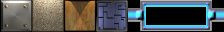
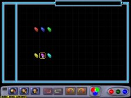
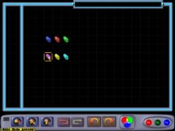

Creating walls and obstructions:
Normally, when you create a level, you begin with a map that is surrounded by pieces called 'wood'. A wood piece is just like any other piece (such as a mirror or laser) however, it is special in that if you try to rotate it, it does not appear to rotate. Instead it changes into 8 different shapes that can be used to make region boundaries that fit together nicely. The 8 different rotations of a wood piece are as follows:
You will notice however, that 2 more shapes are required to create a level map that has 2 or more boundary regions. These are the two junction pieces that look like this:
Since there are only 8 rotations available for one piece, we decided to let these pieces be 2 rotations of a colored (or non-white) wood piece. So in order to make a piece like this, insert a wood piece where you would like it and change the color from white to anything else, then rotate until you have the piece you require.
There is another type of piece that behaves similary to the wood piece. This piece is called a 'brick'. The different rotations of a brick piece look like this:

Wood and bricks are different in the way that they interact with the laser light. A wood piece will allow light to go half way through the piece, whereas a brick will not allow any light to enter the piece.
Special note: THE 8th ROTATION OF THE WOOD PIECE IS INVISIBLE. This special rotation of the wood piece is used for creating tutorial levels in which case we would like to prevent the user from placing a piece in certain places. This rotation should not be used when creating a normal level.
Advanced keyboard support:
The Aargon level editor fully supports the use of the keyboard while editing. In fact all actions that may be performed with the mouse can also be done using the keyboard.
The keys are used as follows:
1) If a key is pressed that is associated with a piece from the piece list, then a new piece of that type to be created at the current cursor position (this is similar to painting).
Otherwise, the keys have the following meaning:
Del - Delete the item at the current cursor position. Enter - Clone the selected piece at the current cursor position. Esc - If in painting/cloning/erasing mode, terminates mode. Ctrl-C - Copy current map to memory. Ctrl-V - Paste copied map from memory into current map. Ctrl-M - Toggle the item-under-the-cursor's Moveable property. Ctrl-R - Toggle the item-under-the-cursor's Rotateable property. Ctrl-X - Toggle both the item-under-the-cursor's Moveable and Rotateable properties. Ctrl-O - Load a level map from disk (Open). Ctrl-F - Save current map to file (Save As). Ctrl-S - Save changes to current map. Ctrl-T - Test level. Ctrl-W - Swap last copied level with current level. Ctrl-Z - Undo last action. Ctrl-A - Redo last undo. Ctrl-Y - Redo last undo. Ctrl-Enter - Rename level.
All other keys work as they normally would while playing the game.
Special Note:
If the control key is held down while a piece is dragged, then when the item is dropped, the starting row and column of the item will be swapped with the final row and column of the item. Notice the effect in the two pictures below


Before Swap After Swap
(back to editor index)